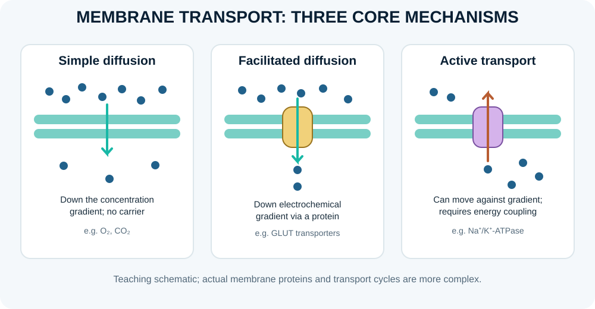
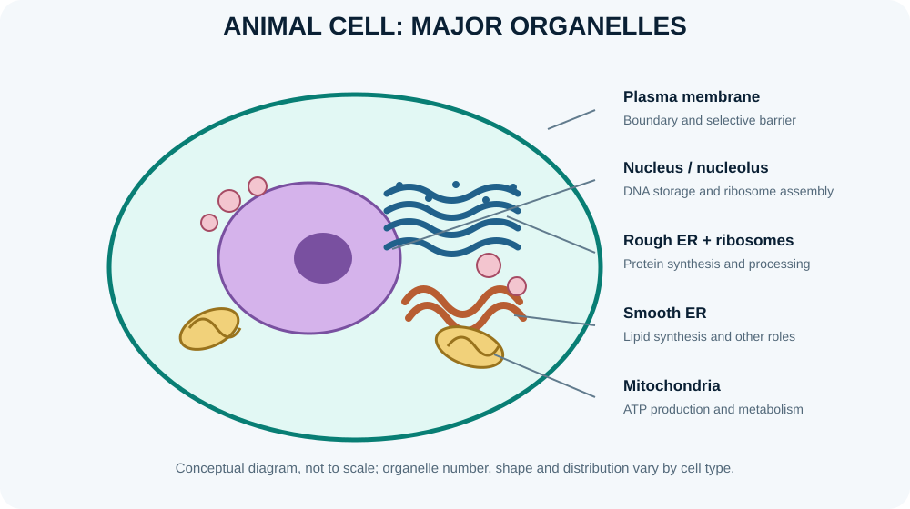

Cell membrane and transport

The plasma membrane is a selectively permeable phospholipid bilayer containing proteins, cholesterol and carbohydrate groups. It separates intracellular from extracellular fluid while allowing regulated exchange and cell signalling.
Learning objectives
- Distinguish simple diffusion, facilitated diffusion, osmosis and active transport.
- Explain how membrane proteins support selective movement across the plasma membrane.
- Compare primary and secondary active transport using ATP-dependent pumps and coupled transporters.
- Predict the direction of net water movement when effective solute concentrations differ across a membrane.
High-yield study points
- Simple diffusion moves substances down their concentration gradient without direct energy input.
- Facilitated diffusion uses channels or carriers but does not directly consume ATP.
- Primary active transport uses energy directly, as in the sodium-potassium ATPase.
- Secondary active transport uses an ion gradient created by another transport process.
- Osmosis is net water movement across a selectively permeable membrane due to effective osmotic gradients.
Clinical connection
Membrane transport is central to intestinal absorption, renal handling of solutes and electrical signalling in excitable cells.
Check your understanding
- Does facilitated diffusion directly require ATP hydrolysis?
Reveal answer
No. It uses channels or carriers to move substances down their electrochemical gradient without directly consuming ATP.
- What powers primary active transport?
Reveal answer
Direct energy input, commonly ATP hydrolysis, as in the Na⁺/K⁺-ATPase.
- Osmosis is the net movement of what?
Reveal answer
Water across a selectively permeable membrane in response to a difference in water potential/effective solute concentration.
Visual study: animal cell organelles

Further reading
OpenStax, Anatomy and Physiology 2e — cell structure, membranes and organelles.